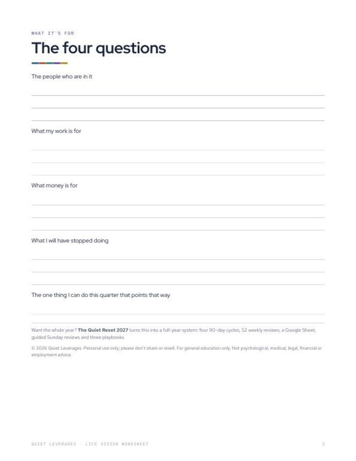
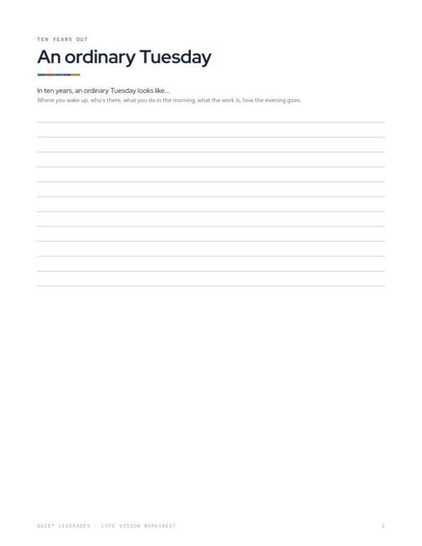

Ask where you want to be in ten years and you get a blank. Describe an ordinary Tuesday and you get an answer.
One full page for the Tuesday you want in ten years, four questions to work back from it, and one next step for this quarter.
Instant download. Print it or use it on a tablet with any PDF app. Prints fine on A4 at 'fit to page'.

A Tuesday, not a goal
A full page to describe the ordinary day you want: where you wake up, who is there, what the work is.
Four questions
People, work, money, and what you will have stopped doing. Short answers, written in pencil.
One step this quarter
You finish with the one thing you can do in the next three months that points the right way.
years out, one ordinary Tuesday
questions
pages
What you leave with
A vision you can picture
A specific day is easier to write than a ten-year goal, and easier to check against your week now.
What you will stop doing, on paper
One of the four questions asks what you will have stopped. It is often the clearest line on the page.
A short path back to today
One next step for this quarter, so the vision does not stay a nice page in a drawer.
Three pages, no setup
Print it, pick up a pencil, and start on page 2.
Three pages that go from a day to a step
Use it once, then re-read it each quarter.
- The ordinary Tuesday. A full page for the day you want in ten years.
- Four questions. People, work, money, and what you will have stopped.
- One next step. The one thing for this quarter.
- Printable PDF. US Letter, 3 pages, undated.

Three moves, one sitting
Describe the Tuesday
Write the day in detail on the full page.
Answer the four questions
People, work, money, and what you will have stopped doing.
Pick this quarter's step
Write the one thing you can do now that points that way.
A good fit if the long view feels vague
Use this if
- You have goals for this year but no picture of the longer arc.
- You want to know what your work and money are for.
- You prefer a pencil and a page to an app.
Skip it if
- You want a full year plan with reviews. See The Quiet Reset 2027.
- You want a vision board or a motivational read. This is a worksheet you fill in.
- You want financial or career advice. This is a planning page.
Why we built it
What readers say about Life Vision Worksheet
Write your Tuesday tonight
Three pages and a pencil. If you want the whole year planned around it, the next step is ready.
- Ten-year ordinary Tuesday page
- Four questions: people, work, money, what you will stop
- One next step for this quarter
Before you decide
How long does it take?
It is three pages. Take as long as your ordinary Tuesday needs. The quarter step is a single line.
What format is it?
A printable PDF, US Letter, 3 pages. It prints fine on A4 at 'fit to page'.
Can I use it on a tablet?
Yes. Any PDF app that lets you write on a page will do. Printing and a pencil works too.
Who is it for?
Anyone who can plan the year ahead but finds the ten-year view vague. It is undated, so any year works.
Is it advice?
No. It is a planning worksheet. General education only; not financial, legal, employment or mental-health advice.
The next step after this one
One ordinary Tuesday, ten years out.
Write it down, then name one step for this quarter.
Get the worksheet for $7One-time $7 on Gumroad. Instant download.